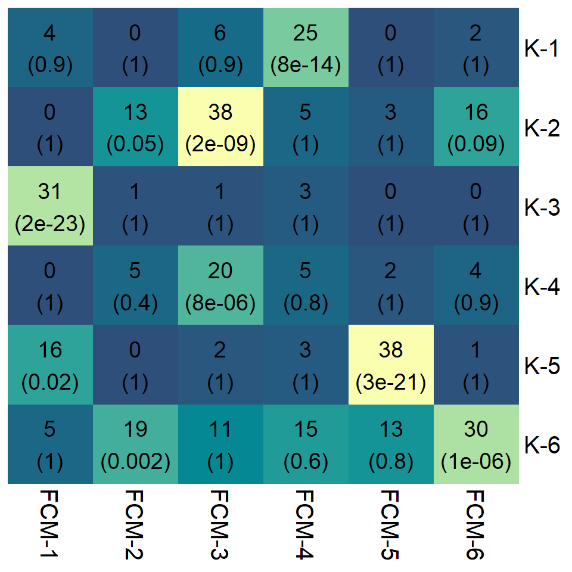

Last updated: 2022-12-12
Checks: 7 0
Knit directory: anderson-peffers_OA/
This reproducible R Markdown analysis was created with workflowr (version 1.7.0). The Checks tab describes the reproducibility checks that were applied when the results were created. The Past versions tab lists the development history.
Great! Since the R Markdown file has been committed to the Git repository, you know the exact version of the code that produced these results.
Great job! The global environment was empty. Objects defined in the global environment can affect the analysis in your R Markdown file in unknown ways. For reproduciblity it’s best to always run the code in an empty environment.
The command set.seed(20220927) was run prior to running
the code in the R Markdown file. Setting a seed ensures that any results
that rely on randomness, e.g. subsampling or permutations, are
reproducible.
Great job! Recording the operating system, R version, and package versions is critical for reproducibility.
Nice! There were no cached chunks for this analysis, so you can be confident that you successfully produced the results during this run.
Great job! Using relative paths to the files within your workflowr project makes it easier to run your code on other machines.
Great! You are using Git for version control. Tracking code development and connecting the code version to the results is critical for reproducibility.
The results in this page were generated with repository version cbc8d58. See the Past versions tab to see a history of the changes made to the R Markdown and HTML files.
Note that you need to be careful to ensure that all relevant files for
the analysis have been committed to Git prior to generating the results
(you can use wflow_publish or
wflow_git_commit). workflowr only checks the R Markdown
file, but you know if there are other scripts or data files that it
depends on. Below is the status of the Git repository when the results
were generated:
Ignored files:
Ignored: .Rhistory
Ignored: .Rproj.user/
Ignored: analysis/.Rhistory
Untracked files:
Untracked: analysis/06_jDR_2.Rmd
Untracked: analysis/08_Functional_enrichment_2.Rmd
Untracked: analysis/about_check.Rmd
Untracked: code/modified_heatmap.R
Untracked: data/complete_annotation.csv
Untracked: data/complete_annotation.rds
Untracked: data/miRNA.dat
Untracked: data/mofa2_plasma_2.rds
Untracked: data/mofa2_plasma_df_2.rds
Untracked: data/mofa2_sf_2.rds
Untracked: data/mofa2_sf_df_2.rds
Untracked: data/plasma_sequencing_data.rds
Untracked: data/sf_sequencing_data.rds
Untracked: imgs/jDR/plasma/v1/
Untracked: imgs/jDR/plasma/v2_USETHIS/
Untracked: imgs/jDR/synovial_fluid/v1/
Untracked: imgs/jDR/synovial_fluid/v2_USETHIS/
Untracked: imgs/sampling_types.png
Untracked: output/complete_annotation.csv
Untracked: output/complete_annotation.rds
Untracked: output/enrichment_results/
Untracked: plasma_model2.hdf5
Untracked: sf_time_model2.hdf5
Unstaged changes:
Modified: analysis/04_Sequencing_QC_normalisation.Rmd
Modified: analysis/05_Sequencing_EDA.Rmd
Modified: analysis/06_jDR.Rmd
Deleted: analysis/06_jDR_test.Rmd
Modified: analysis/08_Functional_enrichment.Rmd
Modified: analysis/_site.yml
Deleted: docs.zip
Deleted: imgs/jDR/plasma/gsea_lipid_binding.png
Deleted: imgs/jDR/plasma/gsea_organitrogen.png
Deleted: imgs/jDR/plasma/gsea_phospholipid.png
Deleted: imgs/jDR/plasma/miRNA_plasma_factor2.PDF
Deleted: imgs/jDR/plasma/plasma_f2_gsea.PDF
Deleted: imgs/jDR/plasma/plasma_f2_gsea.png
Deleted: imgs/jDR/plasma/plasma_factor_group_correlation_mofa.PDF
Deleted: imgs/jDR/plasma/plasma_factor_variation_mofa.PDF
Deleted: imgs/jDR/plasma/plasma_factors_gsea_non-sig.PDF
Deleted: imgs/jDR/plasma/plasma_factors_gsea_non-sig.png
Deleted: imgs/jDR/plasma/plasma_mofa.PDF
Deleted: imgs/jDR/plasma/protein_plasma_factor2.PDF
Deleted: imgs/jDR/plasma/synovial_fluid_f5_gsea.PDF
Deleted: imgs/jDR/plasma/synovial_fluid_f5_gsea.png
Deleted: imgs/jDR/plasma/synovial_fluid_factors_gsea_non-sig.PDF
Deleted: imgs/jDR/plasma/synovial_fluid_factors_gsea_non-sig.png
Deleted: imgs/jDR/synovial_fluid/f3_gsea_inflammation.png
Deleted: imgs/jDR/synovial_fluid/gsea_f5_supramolecular_complex.png
Deleted: miRNA.dat
Modified: output/plasma_limma_DE_results_log2.xlsx
Modified: output/plasma_proDA_DE_results.xlsx
Modified: output/sf_proDA_DE_results.xlsx
Modified: plasma_model.hdf5
Deleted: protein_plasma_factor2_names.PDF
Modified: sf_model.hdf5
Modified: sf_time_model.hdf5
Note that any generated files, e.g. HTML, png, CSS, etc., are not included in this status report because it is ok for generated content to have uncommitted changes.
These are the previous versions of the repository in which changes were
made to the R Markdown (analysis/07_Clustering.Rmd) and
HTML (docs/07_Clustering.html) files. If you’ve configured
a remote Git repository (see ?wflow_git_remote), click on
the hyperlinks in the table below to view the files as they were in that
past version.
| File | Version | Author | Date | Message |
|---|---|---|---|---|
| Rmd | 526bc37 | ejjohnson93 | 2022-11-25 | Project completion |
| html | 526bc37 | ejjohnson93 | 2022-11-25 | Project completion |
| Rmd | fc9ca8a | ejjohnson93 | 2022-11-23 | functional enrichment |
| Rmd | 218071a | ejjohnson93 | 2022-11-17 | Clustering + figures |
| html | 218071a | ejjohnson93 | 2022-11-17 | Clustering + figures |
| Rmd | 2238906 | ejjohnson93 | 2022-11-16 | Optimising cluster visualisation |
| Rmd | 8545844 | ejjohnson93 | 2022-11-15 | Clustering |
| Rmd | 6ed591f | ejjohnson93 | 2022-11-11 | jDR + clustering + knitting |
| html | 6ed591f | ejjohnson93 | 2022-11-11 | jDR + clustering + knitting |
| Rmd | e34c9f9 | ejjohnson93 | 2022-11-03 | Updated theme + additional analysis docs |
library(tidyverse)
library(Mfuzz) # clustering package
library(dtwclust) # clustering package
library(cowplot) # ggplot2 theme
library(ggpubr) # utilities to arrange/annotate ggplot2 plots
library(MetBrewer) # additional palettes
library(WGCNA) # matchLabels and accuracyMeasures functions
library(pheatmap) # for correlation plots# Plasma
plasma_annotation <- readRDS("./data/plasma_proteomics_annotation.rds")
plasma_pheno <- readRDS("./data/plasma_pheno.rds")
plasma_proteomics_data <- readRDS("./data/plasma_data_norm.rds")
plasma_miRNA_data <- readRDS("./data/plasma_miRNA_data.rds")
plasma_lncRNA_data <- readRDS("./data/plasma_lncRNA_data.rds")
plasma_snRNA_data <- readRDS("./data/plasma_snRNA_data.rds")
# SF
sf_annotation <- readRDS("./data/sf_proteomics_annotation.rds")
sf_pheno <- readRDS("./data/sf_pheno.rds")
sf_proteomics_data <- readRDS("./data/sf_data_norm.rds")
sf_miRNA_data <- readRDS("./data/sf_miRNA_data.rds")
sf_lncRNA_data <- readRDS("./data/sf_lncRNA_data.rds")
sf_snRNA_data <- readRDS("./data/sf_snRNA_data.rds")Before clustering can be carried out several additional data cleaning and normalisation steps needed to be carried out. The 0s were first converted to NAs, as the previous analysis showed they were sampling zeroes rather than biological zeroes:
# Plasma
plasma_miRNA_data[plasma_miRNA_data == 0] <- NA
plasma_lncRNA_data[plasma_lncRNA_data == 0] <- NA
plasma_snRNA_data[plasma_snRNA_data == 0] <- NA
# SF
sf_miRNA_data[sf_miRNA_data == 0] <- NA
sf_lncRNA_data[sf_lncRNA_data == 0] <- NA
sf_snRNA_data[sf_snRNA_data == 0] <- NAAdditionally, for the synovial fluid the control samples need to be removed as these will interfere will the time series clustering.
sf_pheno <- sf_pheno[!sf_pheno$Group == "Control",]
sf_proteomics_data <- sf_proteomics_data[,sf_pheno$Sample.Number]
sf_miRNA_data <- sf_miRNA_data[,sf_pheno$Sample.Number]
sf_lncRNA_data <- sf_lncRNA_data[,sf_pheno$Sample.Number]
sf_snRNA_data <- sf_snRNA_data[,sf_pheno$Sample.Number]Before Z-score normalisation the data was filtered to only include features with high variance. This is because protein/sequencing data is extremely noisy. Noisy features can then be assigned to clusters even if their expression pattern isn’t representative of the cluster.
Plasma:
## Create vectors of variance/mean value per protein
vars <- apply(plasma_proteomics_data, 1, var, na.rm=TRUE)
means <- apply(plasma_proteomics_data, 1, mean, na.rm=TRUE)
## Subset the data to only include proteins with a variance >1 and mean >2
plasma_proteomics_data <- plasma_proteomics_data[which(vars > 1 & means >2),]
## Remove any rows that contain >20% missing values
plasma_proteomics_data <- plasma_proteomics_data[which(rowMeans(is.na(plasma_proteomics_data)) < 0.2), ]Synovial fluid:
## Create vectors of variance/mean value per protein
vars <- apply(sf_proteomics_data, 1, var, na.rm=TRUE)
means <- apply(sf_proteomics_data, 1, mean, na.rm=TRUE)
## Subset the data to only include proteins with a variance >1 and mean >2
sf_proteomics_data <- sf_proteomics_data[which(vars > 1 & means >2),]
## Remove any rows that contain >20% missing values
sf_proteomics_data <- sf_proteomics_data[which(rowMeans(is.na(sf_proteomics_data)) < 0.2), ]Z-score normalisation scales the data such that the mean of all of the values is 0 and the standard deviation is 1. It is useful for integrating multi-omics data. This was carried out for the proteomics and sequencing data, before concatenating the normalised -omics together for the plasma and synovial fluid samples.
# Proteomics
plasma_proteomics_Znorm <- t(apply(plasma_proteomics_data, 1, function(x) scale(x, center = T, scale = T)))
colnames(plasma_proteomics_Znorm) <- colnames(plasma_proteomics_data)
# miRNA
plasma_miRNA_Znorm <- t(apply(plasma_miRNA_data, 1, function(x) scale(x, center = T, scale = T)))
colnames(plasma_miRNA_Znorm) <- colnames(plasma_miRNA_data)
# lncRNA
plasma_lncRNA_Znorm <- t(apply(plasma_lncRNA_data, 1, function(x) scale(x, center = T, scale = T)))
colnames(plasma_lncRNA_Znorm) <- colnames(plasma_lncRNA_data)
# snRNA
plasma_snRNA_Znorm <- t(apply(plasma_snRNA_data, 1, function(x) scale(x, center = T, scale = T)))
colnames(plasma_snRNA_Znorm) <- colnames(plasma_snRNA_data)Concatenate plasma data together:
plasma_data <- rbind(plasma_proteomics_Znorm, plasma_miRNA_Znorm, plasma_lncRNA_Znorm, plasma_snRNA_Znorm)# Proteomics
sf_proteomics_Znorm <- t(apply(sf_proteomics_data, 1, function(x) scale(x, center = T, scale = T)))
colnames(sf_proteomics_Znorm) <- colnames(sf_proteomics_data)
# miRNA
sf_miRNA_Znorm <- t(apply(sf_miRNA_data, 1, function(x) scale(x, center = T, scale = T)))
colnames(sf_miRNA_Znorm) <- colnames(sf_miRNA_data)
# lncRNA
sf_lncRNA_Znorm <- t(apply(sf_lncRNA_data, 1, function(x) scale(x, center = T, scale = T)))
colnames(sf_lncRNA_Znorm) <- colnames(sf_lncRNA_data)
# snRNA
sf_snRNA_Znorm <- t(apply(sf_snRNA_data, 1, function(x) scale(x, center = T, scale = T)))
colnames(sf_snRNA_Znorm) <- colnames(sf_snRNA_data)Concatenate sf data together:
sf_data <- rbind(sf_proteomics_Znorm, sf_miRNA_Znorm, sf_lncRNA_Znorm, sf_snRNA_Znorm)The two clustering algorithms employed in this analysis do not recognise multiple replicates in the same dataframe. Before clustering the average z-score for each time point was calculated and the data was re-ordered by time.
Plasma:
plasma_time_df <- data.frame("Day_0" = rowMeans(plasma_data[,plasma_pheno$Day == "0"], na.rm=TRUE),
"Day_10" = rowMeans(plasma_data[,plasma_pheno$Day == "10"], na.rm=TRUE),
"Day_35" = rowMeans(plasma_data[,plasma_pheno$Day == "35"], na.rm=TRUE),
"Day_42" = rowMeans(plasma_data[,plasma_pheno$Day == "42"], na.rm=TRUE),
"Day_49" = rowMeans(plasma_data[,plasma_pheno$Day == "49"], na.rm=TRUE),
"Day_56" = rowMeans(plasma_data[,plasma_pheno$Day == "56"], na.rm=TRUE),
"Day_63" = rowMeans(plasma_data[,plasma_pheno$Day == "63"], na.rm=TRUE))
# Despite the filtering some time points will still end up with 0 samples for a particular feature
# These need to be removed
plasma_time_df <- na.omit(plasma_time_df)Synovial fluid:
sf_time_df <- data.frame("Day_0" = rowMeans(sf_data[,sf_pheno$Day == "0"], na.rm=TRUE),
"Day_10" = rowMeans(sf_data[,sf_pheno$Day == "10"], na.rm=TRUE),
"Day_35" = rowMeans(sf_data[,sf_pheno$Day == "35"], na.rm=TRUE),
"Day_42" = rowMeans(sf_data[,sf_pheno$Day == "42"], na.rm=TRUE),
"Day_49" = rowMeans(sf_data[,sf_pheno$Day == "49"], na.rm=TRUE),
"Day_56" = rowMeans(sf_data[,sf_pheno$Day == "56"], na.rm=TRUE),
"Day_63" = rowMeans(sf_data[,sf_pheno$Day == "63"], na.rm=TRUE))
# Despite the filtering some time points will still end up with 0 samples for a particular feature
# These need to be removed
sf_time_df <- na.omit(sf_time_df)Create an ExpressionSet object containing the data:
expData <- ExpressionSet(as.matrix(plasma_time_df))Estimate the fuzzifier to designate how ‘fuzzy’ the clusters are. A fuzzifier of 1 is almost equivalent to hard clustering.
m1 <- mestimate(expData)The Dmin() function calculates the minimum centroid
distance between clusters for a series of cluster numbers. We can use
this to determine the optimum number of clusters to use. After a certain
number of clusters the separation between clusters becomes minimal.
Visual inspection of the plot shows an ‘elbow’ to pick the appropriate k
number.
Dmin(expData, m=m1, crange=seq(2,22,1), repeats=3, visu=TRUE) [1] 8.520583e-01 6.240207e-01 2.112929e-02 6.720354e-03 3.002782e-03
[6] 2.024252e-03 5.406994e-04 3.146921e-04 1.518910e-04 7.297920e-05
[11] 8.196159e-05 4.936843e-05 2.063865e-05 2.496681e-04 1.247442e-04
[16] 6.570772e-05 5.193325e-05 1.207223e-04 1.046694e-04 1.729926e-04
[21] 1.834232e-04Visual inspection of the plot suggests <5 clusters are required.
clust <- 4# Carry out clustering using the calculated cluster number and fuzziness parameters
set.seed(5)
plasma_mfuzz_cl <- mfuzz(expData,c=clust,m=m1)cor(t(plasma_mfuzz_cl[[1]])) 1 2 3 4
1 1.0000000 -0.3972422 -0.4712950 -0.4163115
2 -0.3972422 1.0000000 0.9794942 0.7908078
3 -0.4712950 0.9794942 1.0000000 0.8864916
4 -0.4163115 0.7908078 0.8864916 1.0000000The per-cluster membership can be plotted with the in-built Mfuzz
function mfuzz.plot.
mfuzz.plot(eset = expData, cl = plasma_mfuzz_cl, mfrow = c(2,2))However, this doesn’t give the same level of control over the aesthetics, so ggplot2 was used instead.
The centroids for each cluster were plotted on one graph along with the per-cluster membership scores in separate graphs. Each cluster was assigned a colour. For the per-cluster membership the opacity of each feature was weighted by its membership score. The code was adapted from the following tutorial:
https://2-bitbio.com/2017/10/clustering-rnaseq-data-using-k-means.html
To prepare the centroid data and plot:
# Convert centroid data into long dataframe
plasma_centroids <- plasma_mfuzz_cl$centers
plasma_centroids_df <- data.frame(plasma_centroids)
plasma_centroids_df$cluster <- row.names(plasma_centroids_df)
# Convert dataframe into long format
plasma_centroids_long <- tidyr::pivot_longer(plasma_centroids_df, names_to = "sample", values_to = "value", 1:length(colnames(plasma_centroids)))
# Remove "Day_" prefix from sample names
plasma_centroids_long$sample <- gsub("Day_", "", plasma_centroids_long$sample)# Centroid plot
plasma_mfuzz_centroids_plot <- ggplot(plasma_centroids_long, aes(x=as.numeric(sample),y=value, group=cluster, colour=as.factor(cluster))) +
geom_line(lwd=1) +
theme_cowplot() +
scale_colour_brewer(palette = "Set1") +
xlab("Day") +
ylab("Expression") +
labs(title= "Plasma EV fuzzy c-means expression",color = "Cluster") To prepare the per-cluster feature membership data and plot:
# Create copy of dataframe containing average z-score per time
plasma_membership_df <- data.frame(plasma_time_df)
# Add row with feature names
plasma_membership_df$Feature <- row.names(plasma_membership_df)
# Bind the cluster assignment
plasma_membership_df$cluster <- plasma_mfuzz_cl$cluster
# Fetch the membership for each feature in its top scoring cluster
plasma_membership_df$membership <- sapply(1:length(plasma_membership_df$cluster),function(row){
clust <- plasma_membership_df$cluster[row]
plasma_mfuzz_cl$membership[row,clust]
})
# Convert membership dataframe into long format
plasma_cluster_plot_df <- plasma_membership_df %>%
dplyr::select(.,1:length(colnames(plasma_centroids)), membership, Feature, cluster) %>%
tidyr::gather(.,"sample",'value',1:length(colnames(plasma_centroids)))
# Remove "Day_" prefix from "sample" column
plasma_cluster_plot_df$sample <- gsub("Day_", "", plasma_cluster_plot_df$sample)
# Order the dataframe by membership score
plasma_cluster_plot_df <- plasma_cluster_plot_df[order(plasma_cluster_plot_df$membership),]
# Convert the features into an ordered factor using forcats
plasma_cluster_plot_df$Feature = forcats::fct_inorder(plasma_cluster_plot_df$Feature)# Per-cluster membership plot
plasma_mfuzz_plot_membership <- ggplot(plasma_cluster_plot_df, aes(x=as.numeric(sample),y=value)) +
# Facet-wrap by cluster
facet_wrap(~cluster, scales="free_y") +
# Colour each panel by cluster
# The oppacity of each feature is determined by membership
geom_line(aes(colour=as.factor(cluster), alpha=membership, group =Feature), lwd=1) +
scale_colour_brewer(palette = "Set1") +
# Add the centroids as a black line
geom_line(data=plasma_centroids_long, aes(x=as.numeric(sample), y=value, group=cluster), lwd=1.2, color="black",inherit.aes=FALSE) +
xlab("Day") +
ylab("Expression") +
labs(title="Per-cluster membership") +
theme_cowplot() +
theme(legend.position = "none")To visualise the results together:
ggarrange(plasma_mfuzz_centroids_plot, plasma_mfuzz_plot_membership,
nrow = 1,
ncol = 2,
labels = c("A", "B"))Cluster 4 appears to display the most interesting pattern over time, with an initial dip after OA induction followed by increased expression over the time course. As cluster 2 & 3 have a high overlap they are likely redundant clusters. Cluster 1 has a distinct profile, though as it fluctuates from high to low its difficult to speculate how it translates to OA progression.
For downstream analysis the membership scores for each gene by cluster were extracted:
# Extracts membership values
plasma_acore <- acore(expData, plasma_mfuzz_cl, min.acore=0)
# Create a combined dataframe of the combined clusters
plasma_acore_list <- do.call(rbind, lapply(seq_along(plasma_acore), function(i){ data.frame(CLUSTER=i, plasma_acore[[i]])}))It is interesting that eca-miR-186(Li et al. 2021), F7C1Y3(Chou et al. 2020) and eca-miR-126-5p were among the members of cluster 4.
The same steps were repeated but for the synovial fluid data instead.
Create an ExpressionSet object containing the data:
expData <- ExpressionSet(as.matrix(sf_time_df))Estimate the fuzzifier to designate how ‘fuzzy’ the clusters are. A fuzzifier of 1 is almost equivalent to hard clustering.
m1 <- mestimate(expData)Estimate number of clusters required:
Dmin(expData, m=m1, crange=seq(2,22,1), repeats=3, visu=TRUE) [1] 1.115852599 0.535072006 0.301359314 0.217062356 0.024929588 0.021075170
[7] 0.029505365 0.011466759 0.013917440 0.012368646 0.016592531 0.007800507
[13] 0.010526264 0.001905725 0.009248844 0.005652783 0.009083171 0.004543876
[19] 0.006119594 0.003049429 0.004465958Visual inspection of the plot suggests <7 clusters are required.
clust <- 6# Carry out clustering using the calculated cluster number and fuzziness parameters
set.seed(5)
sf_mfuzz_cl <- mfuzz(expData,c=clust,m=m1)cor(t(sf_mfuzz_cl[[1]])) 1 2 3 4 5 6
1 1.0000000 -0.7555527 -0.9726895 0.5737932 -0.2234023 -0.7644797
2 -0.7555527 1.0000000 0.6504193 -0.3692796 -0.2389322 0.9994863
3 -0.9726895 0.6504193 1.0000000 -0.5409932 0.3312384 0.6653548
4 0.5737932 -0.3692796 -0.5409932 1.0000000 -0.7196810 -0.3685807
5 -0.2234023 -0.2389322 0.3312384 -0.7196810 1.0000000 -0.2307242
6 -0.7644797 0.9994863 0.6653548 -0.3685807 -0.2307242 1.0000000Results suggest 5&6 may be redundant clusters due to correlation between their centroids.
Plot centroid expression over time and per-cluster membership scores as before. First prepare the centroid data and plot:
# Convert centroid data into long dataframe
sf_centroids <- sf_mfuzz_cl$centers
sf_centroids_df <- data.frame(sf_centroids)
sf_centroids_df$cluster <- row.names(sf_centroids_df)
# Convert dataframe into long format
sf_centroids_long <- tidyr::pivot_longer(sf_centroids_df, names_to = "sample", values_to = "value", 1:length(colnames(sf_centroids)))
# Remove "Day_" prefix from sample names
sf_centroids_long$sample <- gsub("Day_", "", sf_centroids_long$sample)# Centroid plot
sf_mfuzz_centroids_plot <- ggplot(sf_centroids_long, aes(x=as.numeric(sample),y=value, group=cluster, colour=as.factor(cluster))) +
geom_line(lwd=1) +
theme_cowplot() +
#scale_colour_brewer(palette = "Set1") +
scale_color_met_d("Hiroshige") +
xlab("Day") +
ylab("Expression") +
labs(title= "SF EV fuzzy c-means expression",color = "Cluster") Next prepare the per cluster feature membership data and plot:
# Create copy of dataframe containing average z-score per time
sf_membership_df <- data.frame(sf_time_df)
# Add row with feature names
sf_membership_df$Feature <- row.names(sf_membership_df)
# Bind the cluster assignment
sf_membership_df$cluster <- sf_mfuzz_cl$cluster
# Fetch the membership for each feature in its top scoring cluster
sf_membership_df$membership <- sapply(1:length(sf_membership_df$cluster),function(row){
clust <- sf_membership_df$cluster[row]
sf_mfuzz_cl$membership[row,clust]
})
# Convert membership dataframe into long format
sf_cluster_plot_df <- sf_membership_df %>%
dplyr::select(.,1:length(colnames(sf_centroids)), membership, Feature, cluster) %>%
tidyr::gather(.,"sample",'value',1:length(colnames(sf_centroids)))
# Remove "Day_" prefix from "sample" column
sf_cluster_plot_df$sample <- gsub("Day_", "", sf_cluster_plot_df$sample)
# Order the dataframe by membership score
sf_cluster_plot_df <- sf_cluster_plot_df[order(sf_cluster_plot_df$membership),]
# Convert the features into an ordered factor using forcats
sf_cluster_plot_df$Feature = forcats::fct_inorder(sf_cluster_plot_df$Feature)# Per-cluster membership plot
sf_mfuzz_plot_membership <- ggplot(sf_cluster_plot_df, aes(x=as.numeric(sample),y=value)) +
# Facet-wrap by cluster
facet_wrap(~cluster, scales="free_y") +
# Colour each panel by cluster
# The oppacity of each feature is determined by membership
geom_line(aes(colour=as.factor(cluster), alpha=membership, group =Feature), lwd=1) +
scale_color_met_d("Hiroshige") +
# Add the centroids as a black line
geom_line(data=sf_centroids_long, aes(x=as.numeric(sample), y=value, group=cluster), lwd=1.2, color="black",inherit.aes=FALSE) +
xlab("Day") +
ylab("Expression") +
labs(title="Per-cluster membership") +
theme_cowplot() +
theme(legend.position = "none")ggarrange(sf_mfuzz_centroids_plot, sf_mfuzz_plot_membership,
nrow = 1,
ncol = 2,
labels = c("A", "B"))Extract membership scores for each gene by cluster:
# Extracts membership values
sf_acore <- acore(expData, sf_mfuzz_cl, min.acore=0)
# Create a combined dataframe of the combined clusters
sf_acore_list <- do.call(rbind, lapply(seq_along(sf_acore), function(i){ data.frame(CLUSTER=i, sf_acore[[i]])}))Combine plasma and synovial fluid soft clustering results together:
ggarrange(ggarrange(plasma_mfuzz_centroids_plot, plasma_mfuzz_plot_membership,
nrow = 1,
ncol = 2,
labels = c("A", "B")),
ggarrange(sf_mfuzz_centroids_plot, sf_mfuzz_plot_membership,
nrow = 1,
ncol = 2,
labels = c("C", "D")),
nrow = 2,
ncol = 1)Overall both datasets have clusters that demonstrate interesting time-dependent behaviour. For the synovial fluid data clusters 4 & 5 have two inverse profiles at day 10. This may be part of the initial immune response to the injury/tissue insult. This was also seen with the differential expression analysis (limma).
To make the analysis more robust multiple clustering methods were
compared. Both Mfuzz and dtwclust are
time-series clustering packages. For dtwclust k-medoid
clustering (PAM) was employed. K-medoid is a form of partitional
clustering. Unlike fuzzy c-means, it is more sensitive to noise in the
data, which is why variance filtering was applied earlier.
plasma_dtwclust_cl <- tsclust(na.omit(plasma_time_df), type = "partitional", k = 4L,
distance = "dtw", centroid = "pam",
seed = 3247L, trace = TRUE,
args = tsclust_args(dist = list(window.size = 20L)))
Precomputing distance matrix...
Iteration 1: Changes / Distsum = 173 / 557.6487
Iteration 2: Changes / Distsum = 75 / 472.9479
Iteration 3: Changes / Distsum = 0 / 472.9479
Elapsed time is 10.06 seconds.# Prepare data for centroid plot
## Convert list object into matrix
plasma_dtw_centroids <- do.call(rbind, plasma_dtwclust_cl@centroids)
## Rename columns in matrix
colnames(plasma_dtw_centroids) <- colnames(plasma_time_df)
## Convert to dataframe
plasma_dtw_centroids_df <- data.frame(plasma_dtw_centroids)
## Add column for cluster
plasma_dtw_centroids_df$cluster <- row.names(plasma_dtw_centroids_df)
## Convert dataframe into long format
plasma_dtw_centroids_long <- tidyr::pivot_longer(plasma_dtw_centroids_df, names_to = "sample", values_to = "value", 1:length(colnames(plasma_dtw_centroids)))
## Remove "Day_" prefix from sample names
plasma_dtw_centroids_long$sample <- gsub("Day_", "", plasma_centroids_long$sample)
# Centroid plot
plasma_dtw_centroids_plot <- ggplot(plasma_dtw_centroids_long, aes(x=as.numeric(sample),y=value, group=cluster, colour=as.factor(cluster))) +
geom_line(lwd=1) +
theme_cowplot() +
scale_colour_brewer(palette = "Set1") +
xlab("Day") +
ylab("Expression") +
labs(title= "Plasma K-medoid expression", color = "Cluster")sf_dtwclust_cl <- tsclust(na.omit(sf_time_df), type = "partitional", k = 6L,
distance = "dtw", centroid = "pam",
seed = 3247L, trace = TRUE,
args = tsclust_args(dist = list(window.size = 20L)))
Precomputing distance matrix...
Iteration 1: Changes / Distsum = 337 / 1104.139
Iteration 2: Changes / Distsum = 142 / 914.9503
Iteration 3: Changes / Distsum = 11 / 908.5555
Iteration 4: Changes / Distsum = 0 / 908.5555
Elapsed time is 37.94 seconds.# Prepare data for centroid plot
## Convert list object into matrix
sf_dtw_centroids <- do.call(rbind, sf_dtwclust_cl@centroids)
## Rename columns in matrix
colnames(sf_dtw_centroids) <- colnames(sf_time_df)
## Convert to dataframe
sf_dtw_centroids_df <- data.frame(sf_dtw_centroids)
## Add column for cluster
sf_dtw_centroids_df$cluster <- row.names(sf_dtw_centroids_df)
## Convert dataframe into long format
sf_dtw_centroids_long <- tidyr::pivot_longer(sf_dtw_centroids_df, names_to = "sample", values_to = "value", 1:length(colnames(sf_dtw_centroids)))
## Remove "Day_" prefix from sample names
sf_dtw_centroids_long$sample <- gsub("Day_", "", sf_centroids_long$sample)
# Centroid plot
sf_dtw_centroids_plot <- ggplot(sf_dtw_centroids_long, aes(x=as.numeric(sample),y=value, group=cluster, colour=as.factor(cluster))) +
geom_line(lwd=1) +
theme_cowplot() +
scale_color_met_d("Hiroshige") +
xlab("Day") +
ylab("Expression") +
labs(title= "SF K-medoid expression", color = "Cluster")ggarrange(plasma_dtw_centroids_plot, sf_dtw_centroids_plot,
nrow = 1,
labels = c("A", "B"))Extract Mfuzz and dtwclust cluster assignments:
# dtwclust
plasma_dtw_cl <- plasma_dtwclust_cl@cluster
names(plasma_dtw_cl) <- row.names(plasma_time_df)
# Mfuzz
plasma_mfuzz_clusters <- plasma_mfuzz_cl$cluster
# Check names are the same order
names(plasma_dtw_cl) == names(plasma_mfuzz_clusters) [1] TRUE TRUE TRUE TRUE TRUE TRUE TRUE TRUE TRUE TRUE TRUE TRUE TRUE TRUE TRUE
[16] TRUE TRUE TRUE TRUE TRUE TRUE TRUE TRUE TRUE TRUE TRUE TRUE TRUE TRUE TRUE
[31] TRUE TRUE TRUE TRUE TRUE TRUE TRUE TRUE TRUE TRUE TRUE TRUE TRUE TRUE TRUE
[46] TRUE TRUE TRUE TRUE TRUE TRUE TRUE TRUE TRUE TRUE TRUE TRUE TRUE TRUE TRUE
[61] TRUE TRUE TRUE TRUE TRUE TRUE TRUE TRUE TRUE TRUE TRUE TRUE TRUE TRUE TRUE
[76] TRUE TRUE TRUE TRUE TRUE TRUE TRUE TRUE TRUE TRUE TRUE TRUE TRUE TRUE TRUE
[91] TRUE TRUE TRUE TRUE TRUE TRUE TRUE TRUE TRUE TRUE TRUE TRUE TRUE TRUE TRUE
[106] TRUE TRUE TRUE TRUE TRUE TRUE TRUE TRUE TRUE TRUE TRUE TRUE TRUE TRUE TRUE
[121] TRUE TRUE TRUE TRUE TRUE TRUE TRUE TRUE TRUE TRUE TRUE TRUE TRUE TRUE TRUE
[136] TRUE TRUE TRUE TRUE TRUE TRUE TRUE TRUE TRUE TRUE TRUE TRUE TRUE TRUE TRUE
[151] TRUE TRUE TRUE TRUE TRUE TRUE TRUE TRUE TRUE TRUE TRUE TRUE TRUE TRUE TRUE
[166] TRUE TRUE TRUE TRUE TRUE TRUE TRUE TRUE# Add to cluster labels:
plasma_dtw_cl_matched <- paste0('K-',plasma_dtw_cl)
plasma_mfuzz_clusters <- paste0('FCM-', plasma_mfuzz_clusters)
# Calculate the overlap
OL<- overlapTable(plasma_dtw_cl_matched, plasma_mfuzz_clusters)
# Get rid of 0 values...
OL$pTable[OL$pTable == 0] <- 2e-300# Extract overlap counts
overlap_counts <- signif(OL$countTable, 2)
# Create matrix of labels for pheatmap
text_labels <- paste(signif(OL$countTable, 2), "\n(",
signif(OL$pTable, 1), ")", sep= "")
dim(text_labels) <- dim(OL$countTable)
# Create heatmap of overlap
plasma_cl_OL_plot <- pheatmap(overlap_counts,
display_numbers = text_labels,
cluster_rows=FALSE,
cluster_cols=FALSE,
border_color = NA,
#color = mako(50),
color = hcl.colors(50, "BluYl"),
fontsize_number = 14,
fontsize_row = 15,
fontsize_col = 15,
number_color = "black",
legend = FALSE)Note, to access the heatmap for functions such as ggarrange, extract
the 4th element, e.g. plasma_cl_OL_plot[[4]].
Fuzzy c-means cluster 3 doesn’t appear to have a corresponding k-medoids cluster. This appears to stem from redundancy between cluster 2&3. It is probably worth reducing the number of clusters to 3 or not including cluster 3 in any downstream analysis.
Extract Mfuzz and dtwclust cluster assignments:
# dtwclust
sf_dtw_cl <- sf_dtwclust_cl@cluster
names(sf_dtw_cl) <- row.names(sf_time_df)
# Mfuzz
sf_mfuzz_clusters <- sf_mfuzz_cl$cluster
# Check names are the same order
names(sf_dtw_cl) == names(sf_mfuzz_clusters) [1] TRUE TRUE TRUE TRUE TRUE TRUE TRUE TRUE TRUE TRUE TRUE TRUE TRUE TRUE TRUE
[16] TRUE TRUE TRUE TRUE TRUE TRUE TRUE TRUE TRUE TRUE TRUE TRUE TRUE TRUE TRUE
[31] TRUE TRUE TRUE TRUE TRUE TRUE TRUE TRUE TRUE TRUE TRUE TRUE TRUE TRUE TRUE
[46] TRUE TRUE TRUE TRUE TRUE TRUE TRUE TRUE TRUE TRUE TRUE TRUE TRUE TRUE TRUE
[61] TRUE TRUE TRUE TRUE TRUE TRUE TRUE TRUE TRUE TRUE TRUE TRUE TRUE TRUE TRUE
[76] TRUE TRUE TRUE TRUE TRUE TRUE TRUE TRUE TRUE TRUE TRUE TRUE TRUE TRUE TRUE
[91] TRUE TRUE TRUE TRUE TRUE TRUE TRUE TRUE TRUE TRUE TRUE TRUE TRUE TRUE TRUE
[106] TRUE TRUE TRUE TRUE TRUE TRUE TRUE TRUE TRUE TRUE TRUE TRUE TRUE TRUE TRUE
[121] TRUE TRUE TRUE TRUE TRUE TRUE TRUE TRUE TRUE TRUE TRUE TRUE TRUE TRUE TRUE
[136] TRUE TRUE TRUE TRUE TRUE TRUE TRUE TRUE TRUE TRUE TRUE TRUE TRUE TRUE TRUE
[151] TRUE TRUE TRUE TRUE TRUE TRUE TRUE TRUE TRUE TRUE TRUE TRUE TRUE TRUE TRUE
[166] TRUE TRUE TRUE TRUE TRUE TRUE TRUE TRUE TRUE TRUE TRUE TRUE TRUE TRUE TRUE
[181] TRUE TRUE TRUE TRUE TRUE TRUE TRUE TRUE TRUE TRUE TRUE TRUE TRUE TRUE TRUE
[196] TRUE TRUE TRUE TRUE TRUE TRUE TRUE TRUE TRUE TRUE TRUE TRUE TRUE TRUE TRUE
[211] TRUE TRUE TRUE TRUE TRUE TRUE TRUE TRUE TRUE TRUE TRUE TRUE TRUE TRUE TRUE
[226] TRUE TRUE TRUE TRUE TRUE TRUE TRUE TRUE TRUE TRUE TRUE TRUE TRUE TRUE TRUE
[241] TRUE TRUE TRUE TRUE TRUE TRUE TRUE TRUE TRUE TRUE TRUE TRUE TRUE TRUE TRUE
[256] TRUE TRUE TRUE TRUE TRUE TRUE TRUE TRUE TRUE TRUE TRUE TRUE TRUE TRUE TRUE
[271] TRUE TRUE TRUE TRUE TRUE TRUE TRUE TRUE TRUE TRUE TRUE TRUE TRUE TRUE TRUE
[286] TRUE TRUE TRUE TRUE TRUE TRUE TRUE TRUE TRUE TRUE TRUE TRUE TRUE TRUE TRUE
[301] TRUE TRUE TRUE TRUE TRUE TRUE TRUE TRUE TRUE TRUE TRUE TRUE TRUE TRUE TRUE
[316] TRUE TRUE TRUE TRUE TRUE TRUE TRUE TRUE TRUE TRUE TRUE TRUE TRUE TRUE TRUE
[331] TRUE TRUE TRUE TRUE TRUE TRUE TRUE# Add to cluster labels:
sf_dtw_cl_matched <- paste0('K-',sf_dtw_cl)
sf_mfuzz_clusters <- paste0('FCM-', sf_mfuzz_clusters)
# Calculate the overlap
OL<- overlapTable(sf_dtw_cl_matched, sf_mfuzz_clusters)
# Get rid of 0 values...
OL$pTable[OL$pTable == 0] <- 2e-300# Extract overlap counts
overlap_counts <- signif(OL$countTable, 2)
# Create matrix of labels for pheatmap
text_labels <- paste(signif(OL$countTable, 2), "\n(",
signif(OL$pTable, 1), ")", sep= "")
dim(text_labels) <- dim(OL$countTable)
# Create heatmap of overlap
sf_cl_OL_plot <- pheatmap(overlap_counts,
display_numbers = text_labels,
cluster_rows=FALSE,
cluster_cols=FALSE,
border_color = NA,
#color = mako(50),
color = hcl.colors(50, "BluYl"),
fontsize_number = 14,
fontsize_row = 15,
fontsize_col = 15,
number_color = "black",
legend = FALSE)
The results demonstrate some overlap between the clustering algorithms, especially for cluster 5. Fuzzy c-means 3 and k-medoids 2 also demonstrate strong overlap.
The mfuzz fuzzy c-means analysis was taken forward for functional enrichment as its was reasonable agreement with the dtwclust for the most relevant clusters. Additionally it includes a membership score which is useful for functional enrichment techniques that need a ranked list (though this would be possible to generate for the dtwclust results too by correlating the features with the centroids and applying a cut-off if this was of interest).
saveRDS(plasma_acore_list, "./data/mfuzz_cluster_plasma_data.rds")
saveRDS(sf_acore_list, "./data/mfuzz_cluster_sf_data.rds")
sessionInfo()R version 4.2.0 (2022-04-22 ucrt)
Platform: x86_64-w64-mingw32/x64 (64-bit)
Running under: Windows 10 x64 (build 19044)
Matrix products: default
Random number generation:
RNG: L'Ecuyer-CMRG
Normal: Inversion
Sample: Rejection
locale:
[1] LC_COLLATE=English_United Kingdom.utf8
[2] LC_CTYPE=English_United Kingdom.utf8
[3] LC_MONETARY=English_United Kingdom.utf8
[4] LC_NUMERIC=C
[5] LC_TIME=English_United Kingdom.utf8
attached base packages:
[1] tcltk stats graphics grDevices utils datasets methods
[8] base
other attached packages:
[1] pheatmap_1.0.12 WGCNA_1.71 fastcluster_1.2.3
[4] dynamicTreeCut_1.63-1 MetBrewer_0.2.0 ggpubr_0.4.0
[7] cowplot_1.1.1 dtwclust_5.5.11 dtw_1.23-1
[10] proxy_0.4-27 Mfuzz_2.56.0 DynDoc_1.74.0
[13] widgetTools_1.74.0 e1071_1.7-11 Biobase_2.56.0
[16] BiocGenerics_0.42.0 forcats_0.5.1 stringr_1.4.0
[19] dplyr_1.0.9 purrr_0.3.4 readr_2.1.2
[22] tidyr_1.2.0 tibble_3.1.7 ggplot2_3.3.6
[25] tidyverse_1.3.1
loaded via a namespace (and not attached):
[1] readxl_1.4.0 backports_1.4.1 Hmisc_4.7-0
[4] workflowr_1.7.0 plyr_1.8.7 splines_4.2.0
[7] GenomeInfoDb_1.32.2 digest_0.6.29 foreach_1.5.2
[10] htmltools_0.5.2 GO.db_3.15.0 fansi_1.0.3
[13] checkmate_2.1.0 magrittr_2.0.3 memoise_2.0.1
[16] cluster_2.1.3 doParallel_1.0.17 tzdb_0.3.0
[19] Biostrings_2.64.0 modelr_0.1.8 RcppParallel_5.1.5
[22] matrixStats_0.62.0 jpeg_0.1-9 colorspace_2.0-3
[25] blob_1.2.3 rvest_1.0.2 ggrepel_0.9.1
[28] haven_2.5.0 xfun_0.31 crayon_1.5.1
[31] RCurl_1.98-1.7 jsonlite_1.8.0 impute_1.70.0
[34] survival_3.3-1 iterators_1.0.14 glue_1.6.2
[37] gtable_0.3.0 zlibbioc_1.42.0 XVector_0.36.0
[40] car_3.1-0 abind_1.4-5 scales_1.2.0
[43] DBI_1.1.2 rstatix_0.7.0 Rcpp_1.0.8.3
[46] htmlTable_2.4.0 xtable_1.8-4 clue_0.3-61
[49] foreign_0.8-82 bit_4.0.4 preprocessCore_1.58.0
[52] Formula_1.2-4 stats4_4.2.0 htmlwidgets_1.5.4
[55] httr_1.4.3 RColorBrewer_1.1-3 modeltools_0.2-23
[58] ellipsis_0.3.2 farver_2.1.0 pkgconfig_2.0.3
[61] nnet_7.3-17 sass_0.4.1 dbplyr_2.2.0
[64] utf8_1.2.2 labeling_0.4.2 tidyselect_1.1.2
[67] rlang_1.0.2 tkWidgets_1.74.0 reshape2_1.4.4
[70] later_1.3.0 AnnotationDbi_1.58.0 munsell_0.5.0
[73] cellranger_1.1.0 tools_4.2.0 cachem_1.0.6
[76] cli_3.3.0 generics_0.1.2 RSQLite_2.2.14
[79] broom_0.8.0 evaluate_0.15 fastmap_1.1.0
[82] yaml_2.3.5 knitr_1.39 bit64_4.0.5
[85] fs_1.5.2 KEGGREST_1.36.2 whisker_0.4
[88] mime_0.12 xml2_1.3.3 flexclust_1.4-1
[91] compiler_4.2.0 rstudioapi_0.13 png_0.1-7
[94] ggsignif_0.6.3 reprex_2.0.1 bslib_0.3.1
[97] stringi_1.7.6 highr_0.9 RSpectra_0.16-1
[100] lattice_0.20-45 Matrix_1.5-1 shinyjs_2.1.0
[103] vctrs_0.4.1 pillar_1.7.0 lifecycle_1.0.1
[106] jquerylib_0.1.4 data.table_1.14.2 bitops_1.0-7
[109] httpuv_1.6.5 R6_2.5.1 latticeExtra_0.6-29
[112] promises_1.2.0.1 gridExtra_2.3 IRanges_2.30.0
[115] codetools_0.2-18 assertthat_0.2.1 rprojroot_2.0.3
[118] withr_2.5.0 S4Vectors_0.34.0 GenomeInfoDbData_1.2.8
[121] parallel_4.2.0 hms_1.1.1 rpart_4.1.16
[124] grid_4.2.0 class_7.3-20 rmarkdown_2.14
[127] carData_3.0-5 git2r_0.30.1 shiny_1.7.1
[130] lubridate_1.8.0 base64enc_0.1-3